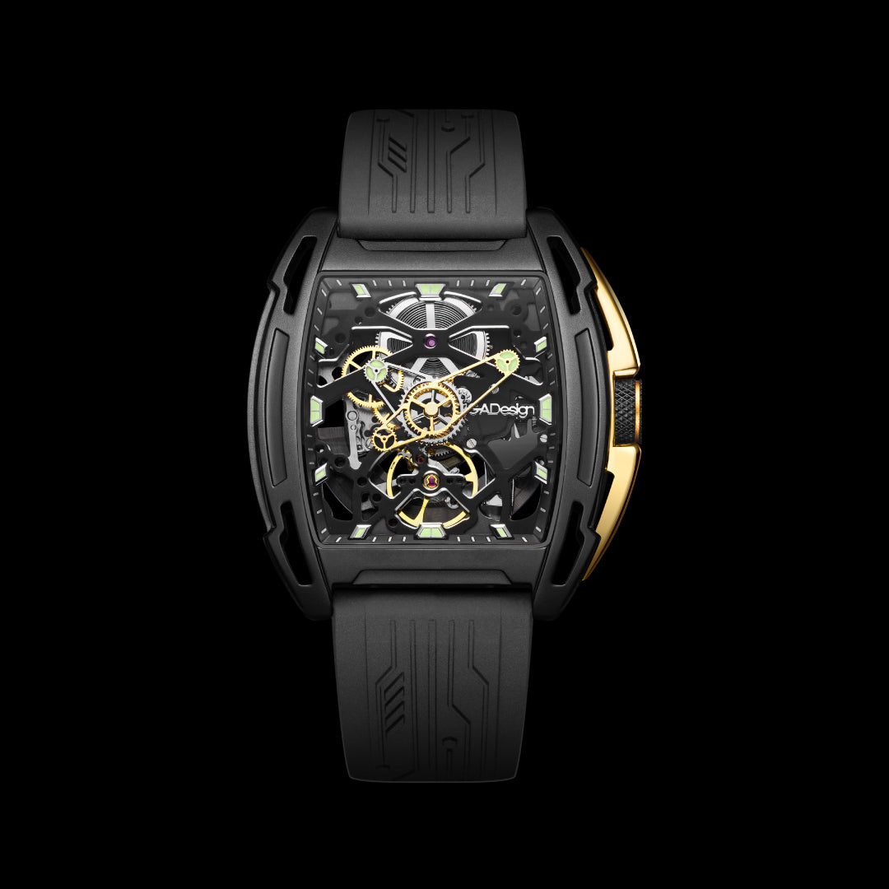
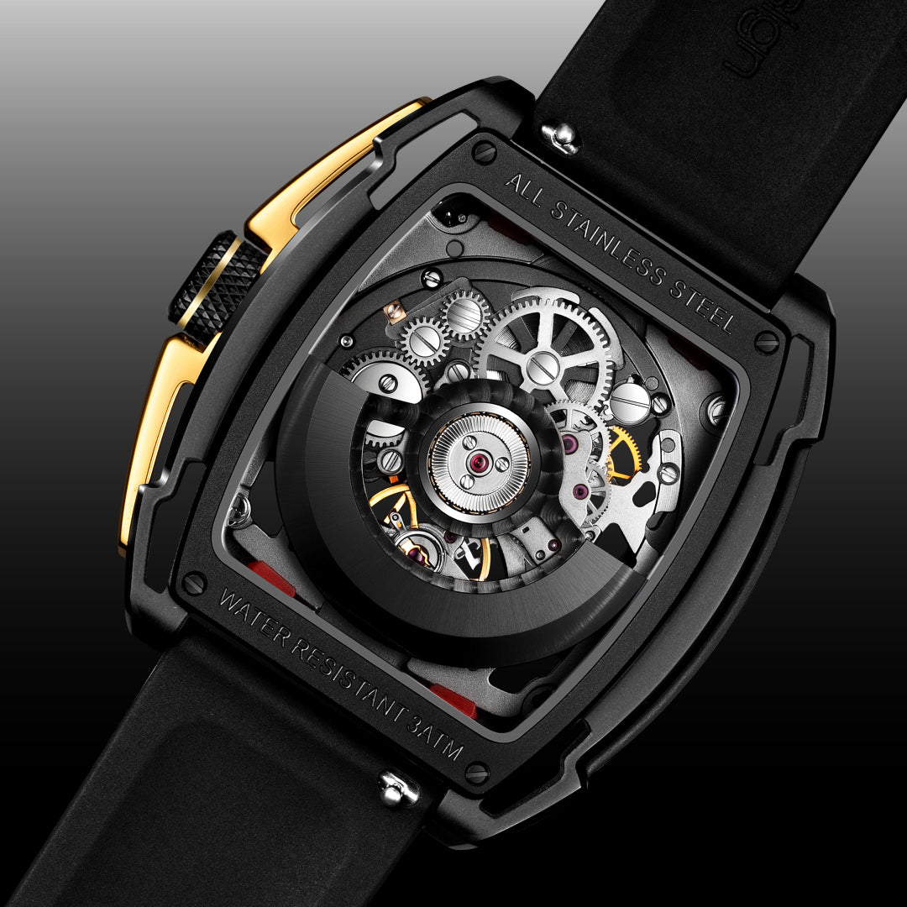
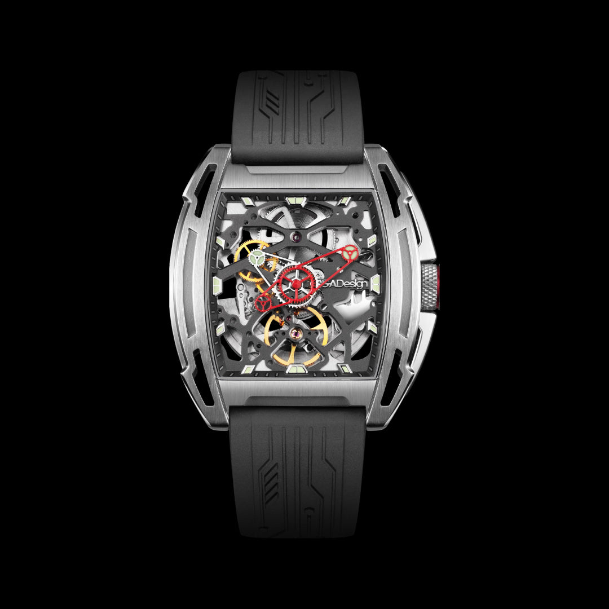
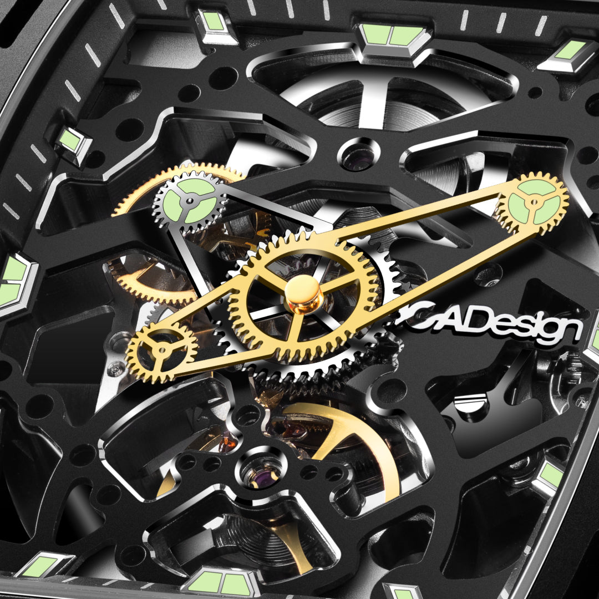
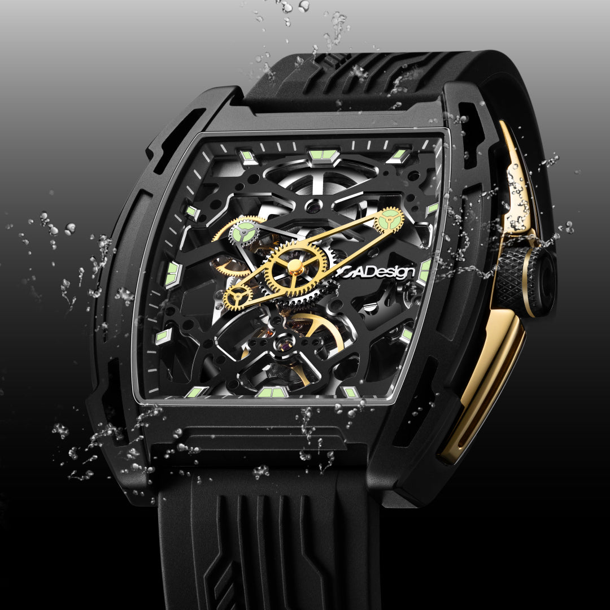
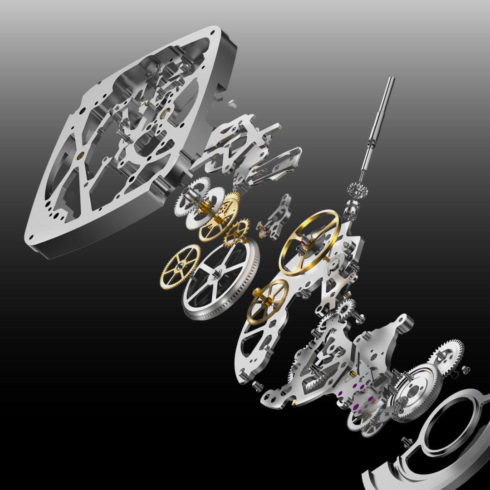

O futuro não é um destino, é um campo de sinais esperando para ser decifrado. A edição Exploration evolui o premiado Edge em uma declaração de estética cibernética e precisão mecânica exposta.
Evolução do Edge, vencedor 2020
O Edge Exploration é a evolução máxima do premiado CIGA design Edge, uma fusão de estética mecânica e artesanato de precisão transformada em estilo futurista.

O tempo não está mais oculto sob um mostrador, ele é exposto como uma forma cibernética. Como uma grade de última geração revelada, a estrutura esqueletizada transforma a mecânica em um campo de descoberta. O Edge Exploration desvela esse núcleo interior com maestria.
Contrastes marcantes, uma silhueta tonneau slim, pontes chanfradas e geometria inspirada em circuitos criam uma linguagem nascida do amanhã. A nova guarda-coroa integrada reforça tanto a proteção quanto a presença, enquanto o design esqueletizado revela o ritmo interior do movimento.
Construído sobre o design celebrado do Edge original, vencedor do German Design Award 2020, o Exploration transforma um design aclamado em uma declaração futurista, maximizando a fusão entre estética mecânica e artesanato de precisão.

Forjada em aço inoxidável em um perfil tonneau slim, a caixa passa por corte CNC, polimento fino e acabamento multi-estágio. Sua construção esqueletizada aprofunda a percepção de cada camada, enquanto cada etapa do processo revela linhas precisas, superfícies suaves e uma estrutura durável construída para durar.
O mostrador adota construção esqueletizada com pontes chanfradas e índices gravados a laser. Ponteiros em formato de engrenagem substituem o design tradicional, com ausência proposital de segundeiro para uma exibição mais limpa e distinta, uma escolha de design que transforma a leitura do tempo em experiência visual.
Os ponteiros e índices de horas são revestidos com Super-LumiNova® C3 de fabricação suíça, oferecendo luminosidade mais brilhante e duradoura. Mesmo na escuridão total, o relógio mantém legibilidade clara com um único olhar.
Calibre CIGA design customizado. 21,600 vph, 40 horas de reserva de marcha e 24 joias para desempenho mecânico suave e preciso.
Domo arqueado de safira sintética que oferece clareza visual absoluta e resistência superior a arranhões, emoldurando o esqueleto como vitrine.
Revestimento luminescente suíço de grau C3 nos ponteiros e índices. Luminosidade excepcional e duradoura mesmo em ambientes de luz zero.
Estrutura aberta com pontes chanfradas expostas. Cada detalhe mecânico à vista, com acabamento multi-estágio que eleva a engenharia à arte.
Cada detalhe técnico foi projetado para reforçar a identidade futurista e a precisão mecânica desta peça de vanguarda.

| Tamanho da Caixa | 48mm × 41,7mm (tonneau) |
| Espessura da Caixa | 12,3mm |
| Material da Caixa | Aço inoxidável com revestimento DLC |
| Tipo de Movimento | Automático, calibre CIGA design customizado |
| Frequência | 21,600 vph |
| Reserva de Marcha | Aproximadamente 40 horas |
| Joias | 24 joias |
| Precisão | -15 ~ +30 segundos/dia |
| Vidro | Safira sintética com curvatura arqueada |
| Resistência à Água | 3 ATM (30 metros) |
| Largura da Pulseira | 22mm |
| Comprimento da Pulseira | 250mm |
| Material da Pulseira | Silicone premium com textura de circuito |
| Sistema de Pulseira | Quick-release (troca rápida sem ferramentas) |
| Luminescência | Super-LumiNova® C3 suíço (ponteiros e índices) |
A construção esqueletizada do Edge Exploration é uma declaração de intenção: nada está escondido. Cada ponte chanfrada, cada joia do calibre e cada engrenagem do movimento automático estão expostos em um display tridimensional. O resultado é um relógio que funciona como um vitral de engenharia, revelando a precisão mecânica como forma de arte contemporânea.
Informações essenciais para que sua apresentação do Edge Exploration seja precisa, autêntica e de alto impacto narrativo.
Como embaixador do Edge Exploration, você está apresentando mais do que um relógio, está comunicando uma filosofia de design que coloca a engenharia mecânica como linguagem visual do futuro. Siga estas diretrizes para transmitir a essência da peça com precisão e autoridade.
Cada ângulo narrativo abaixo foi construído para maximizar o impacto do seu conteúdo sobre o Edge Exploration.
| # | Direcionamento | Foco Narrativo | Base do Script (Exemplo) |
|---|---|---|---|
| 01 | A Evolução Premiada | O German Design Award 2020 como ponto de partida. | "Esse relógio não surgiu do nada, ele é a evolução de um design que ganhou o German Design Award 2020. O Exploration leva esse legado ao próximo nível." |
| 02 | Mecânica Como Arte | O esqueleto visível como declaração estética. | "A CIGA design fez uma escolha radical: não esconder o movimento, mas expô-lo. Cada engrenagem, cada ponte chanfrada é parte da composição visual." |
| 03 | Geometria do Futuro | O perfil tonneau e a cyber-geometry. | "A silhueta tonneau slim com geometria inspirada em circuitos cria uma linguagem visual que não existe em nenhum outro relógio. É literalmente o design do amanhã." |
| 04 | Guarda-Coroa Integrada | Proteção como elemento de design. | "A guarda-coroa não foi adicionada, ela foi integrada à arquitetura da caixa. Mais proteção, mais presença, sem comprometer a estética." |
| 05 | Super-LumiNova® C3 | Visibilidade em qualquer condição de luz. | "Mesmo no escuro, o Edge Exploration não perde sua identidade. O Super-LumiNova® C3 suíço transforma o relógio em um objeto luminoso de presença constante." |
| 06 | Calibre Exclusivo | O movimento automático desenvolvido pela CIGA design. | "Não é um ETA comprado no mercado. É um calibre desenvolvido pela própria CIGA design, 21,600 vph, 24 joias, 40 horas de reserva de marcha." |
| 07 | Ponteiros Engrenagem | O design único dos ponteiros como extensão do conceito. | "Os ponteiros em formato de engrenagem não são decoração, são a extensão lógica de um relógio onde o mecanismo é a mensagem." |
| 08 | Quick-Release | Versatilidade e praticidade sem abrir mão do estilo. | "A pulseira de silicone com textura de circuito troca em segundos sem ferramenta. Um detalhe de engenharia que muda a experiência diária de usar o relógio." |
| 09 | Legado do Edge | A evolução de uma linguagem já reconhecida. | "O Edge Exploration parte da base visual premiada do Edge e leva a proposta para um território ainda mais técnico e futurista." |
| 10 | Embalagem Literária | O unboxing em formato de livro como experiência. | "A experiência começa antes de colocar o relógio no pulso. A embalagem em formato de livro, feita em papel reciclado premium, conta a história da marca como um capítulo." |
Imagens oficiais do Skeleton Edge Exploration disponíveis para uso em seu conteúdo.


Duas linguagens visuais para o mesmo conceito: Black e Silver.
Compre direto no site oficial da CIGA design Brasil. Garantia, parcelamento e envio para todo o país pela JG Importadora.
Descontos cumulativos: 5% no Pix e mais 5% se for a sua primeira compra.
Comprar no Site Oficial usecigadesign.com.br